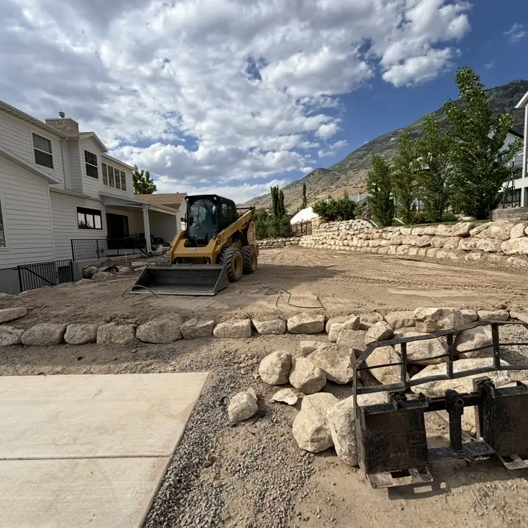
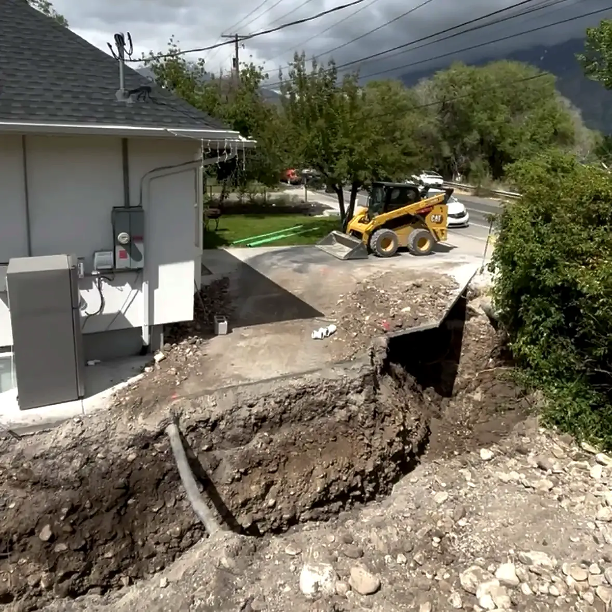

Home / Retaining walls
Boulder & block walls
Retaining walls in Springville & Utah County
Boulder and block retaining walls for sloped yards, terraced beds and new-build lots. We dig it out, build the base and drainage, and set the wall, so one crew handles the whole job.
- 5.0 · 20 Google reviews
- Free estimates
- Same-day response
- Hablamos español

What we build
Boulder walls, block walls and terraces
The right wall depends on the look you want, how much soil it's holding back, and how much room there is to work.
Boulder walls
Large rock set with equipment for a natural look. A good fit for big grade changes, hillsides and xeriscape yards.
Block walls
Interlocking retaining wall block for clean lines, curves, corners, steps and caps. Taller block walls get geogrid tied back into the hill.
Terraced walls
A steep slope broken into two or three shorter walls with level beds between them. Easier to plant, water and mow around than one tall wall.
Walls on new lots
A lot of new builds in Utah County sit on a slope. We grade the lot and build the walls as part of the full yard. New home landscaping
How we build them
What keeps a retaining wall standing
Most walls that bow, lean or fall over fail because of what's under and behind them, not the rock or block you see.
A solid base
We dig below grade, compact a gravel base, and bury the first row so the bottom of the wall can't slide out.
Drainage behind the wall
Clean drain rock and a perforated drain pipe behind the wall. Wet soil pushes hard on a wall, and Utah's freeze and thaw makes it worse.
Backfill in layers
Soil behind the wall goes in and gets compacted a layer at a time, not dumped in all at once.
Leaning into the hill
Each row steps back slightly into the slope, and taller block walls get geogrid reinforcement.
Utilities marked first
Buried lines are marked through Blue Stakes of Utah before any digging starts.
Sprinklers still working
We reroute sprinkler lines around the wall and run drip to the new beds, since we do irrigation too.

Permits & tall walls
When a retaining wall needs a permit
In Springville, a retaining wall more than 4 feet tall, counting the footing, needs a building permit. Utah cities build to the same state building code, so the 4-foot line is common across Utah County, but check with your city. A wall that holds up a driveway, a steep slope or a building can need a permit even when it's shorter.
We build tall walls. Anything over 4 feet is built to an engineered design, with the permit in place before work starts. A big grade change is often better as two terraced walls than one tall one, and we'll tell you which fits your yard.
From Springville City's building permit guidelines, October 2026. Requirements vary by city.
Google reviews
Walls that hold up
Sergio helped me with a few landscape retaining walls in my backyard, they turned out great!
Sergio and his crew were awesome! They did great work, communicated well throughout the whole process, were honest and trustworthy. I would recommend them to anyone and will use them again in the future. We hired them to do a whole remodel of our landscaping including installing sprinklers, cement curbing, sod and xeriscaping. It turned out great, we are very pleased with the quality and care that went into their work.
Sergio did a great job explaining what was going on with our system and explaining different options to fix it within our budget! We came up with a plan and he was diligent and honest with his work. Everything looks and works fantastic! A+
Service area
Based in Springville, working across Utah County
Sprinkler repairs mostly stay close to home. Bigger landscape and excavation projects can go anywhere along the Wasatch Front. Not sure if you're in range? Send a text and ask.
- SpringvilleHome base
- Mapleton
- Spanish Fork
- Salem
- Payson
- Provo
- Orem
- Wasatch FrontLarger projects
Questions
Common questions
Boulder or block: which retaining wall is better?
Neither is better everywhere. Boulders look natural and handle big grade changes with fewer pieces. Block gives cleaner lines, tight curves, steps and caps, and fits narrow spaces. We'll tell you which fits your yard and budget at the free estimate.
Do I need a permit for a retaining wall in Utah?
In Springville, walls more than 4 feet tall, footing included, need a building permit, and a wall holding up a driveway, a steep slope or a building can need one even when it's shorter. Most Utah County cities draw the line in the same place, but check with yours.
How tall can you build a retaining wall?
As tall as the site needs. Walls over 4 feet are built to an engineered design with a permit. A tall grade change is often better as two or three terraced walls.
Why do retaining walls fail?
Usually water. Wet soil pushes hard on the back of a wall, and freezing makes it worse. A compacted base, drain rock, a drain pipe and backfill compacted in layers are what keep a wall straight.
Can you get equipment into my backyard?
We use compact equipment like skid steers and mini excavators for residential yards. Send a photo of your gate or side yard and we'll tell you what fits.
How much does a retaining wall cost?
It depends on the height, the length, the material and how easy it is to get equipment in. Estimates are free, and you get a clear price before any work starts.